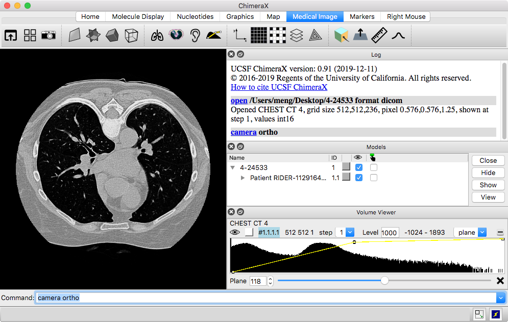

Opening DataSee also: DICOM in VR tutorial, ChimeraX for Medical Image Analysis
Initial Display
Manipulation
3D Presets
Thresholds and Windowing
Volume Rendering Options
Cropping and Clipping
Density Map Icons
Virtual Reality
Sample Data
In ChimeraX, all of the DICOM files in a directory and its subdirectories can be opened in a single operation if the format is specified explicitly:
Menu: File... Open DICOM Folder (dialog shows Format: DICOM image), browse to location, choose directory, click Choose
– or –
Command: open directory-pathname format dicom
...where directory-pathname may contain * as wildcard to lessen typing, and should be enclosed in quotation marks if it includes spaces, for example:
open "~/Desktop/2-CT 5*" format dicom
Each series that is found will be opened as a separate model. Alternatively, to open multiple DICOM files comprising a single 3D image stack:
Menu: File... Open, browse to location, click first file, Shift-click last file to select the entire set, click Open
– or –
Command: open pathname-glob
...where pathname-glob specifies the name and location of multiple files, typically using * as wildcard and enclosed in quotes if it contains spaces, for example:
open "~/Desktop/2-CT 5.0 H30s-55580/*dcm"
| [this dataset provided below] |
|---|
|  |
Only one Z-plane is shown at first. The Volume Viewer tool with a histogram of the data is automatically shown, with plane as the chosen display style.
For 3D volume rendering, choose volume display. This shows the full region in the transparent “solid” style. It may be necessary to adjust thresholds or other rendering settings to get a reasonable appearance after switching display styles.
For full resolution, set the step value to 1
or click the density-map icon
 .
Subsampling to lower resolution (step > 1)
decreases computational demands and
may be needed for responsive rendering of large datasets, particularly in
virtual reality.
Another way to speed rendering is by cropping the data
to a smaller region. The step size may be adjusted automatically when
a dataset is first opened or its display style is changed.
The display style, display region, step size, and many other settings
can also be adjusted with the
volume command,
for example: volume all style solid region all step 1
.
Subsampling to lower resolution (step > 1)
decreases computational demands and
may be needed for responsive rendering of large datasets, particularly in
virtual reality.
Another way to speed rendering is by cropping the data
to a smaller region. The step size may be adjusted automatically when
a dataset is first opened or its display style is changed.
The display style, display region, step size, and many other settings
can also be adjusted with the
volume command,
for example: volume all style solid region all step 1
When multiple datasets or other models are open at the same time,
they can be hidden or shown individually, such as with the
“eye” icons above their histograms in
Volume Viewer, the
 checkboxes in the Model Panel,
or the volume command.
checkboxes in the Model Panel,
or the volume command.
For orthographic projection,
command: camera ortho
...to go back to perspective projection:
camera mono
To bring the whole display into view:
view clip false
| [this dataset provided below] |
|---|
Some DICOM files contain time series that can be played with the time slider shown automatically by ChimeraX or with the vseries command.
Some DICOM files contain SEG objects (segmentations as binary maps), and these are automatically associated with the corresponding image series to synchronize plane display. They can also be displayed as isosurfaces, for example: volume #1.1.1.1.5 show style surf level 1 region all
Segmentations described as radiotherapy structure set (RTSTRUCT) contours are also read and displayed.
Initial defaults:
| rotate
|
left mouse button |
| trackpad click-drag
Mac: also trackpad 2-finger rotation if multitouch* is on |
|
| rotate VR hand-controller with trigger pressed | |
| translate
|
middle or right mouse button |
|
Mac: trackpad + Alt = middle, trackpad + command
( Windows: trackpad + Ctrl-Alt = middle, trackpad + Alt = right, and on some systems, trackpad lower-right corner = right |
|
| move VR hand-controller with trigger pressed | |
| zoom
|
mouse scroll wheel |
|
Mac: trackpad pinch or 4-finger drag if multitouch* enabled,
otherwise 2-finger drag
Windows: trackpad 2-finger drag |
|
| move VR hand-controllers farther apart or closer together with both trigger buttons pressed |
Several other mouse mode functions are available and can be assigned to buttons by:
Disclosing icons that would extend beyond the toolbar requires either enlarging the ChimeraX window until the icon of interest is visible, or clicking the double arrowhead to show an additional row or column of icons. On some systems, the double arrowhead does not show the icons properly except in Rapid Access mode, which can be toggled on and off by clicking the lightning-bolt icon near the bottom right corner of the window.
There is an initial implementation of the Horos 3D presets in ChimeraX. They can be applied by name with the volume command, for example:
volume #1 appearance "Airways II"
This is only an approximation and may not reproduce the appearance in Horos very faithfully; not all Horos settings have a corresponding ChimeraX setting, and some parts of the definition files may have been ignored or misinterpreted. Besides a preset name, appearance initial can be used to (re)set to the colors and intensities that would have been chosen automatically for the data when first shown in the solid style. The initial settings are particularly useful for single-plane display after using any of the 3D presets on a 3D region.
The density-map icons
 and
and
 apply the “Airways II” and initial settings, respectively.
apply the “Airways II” and initial settings, respectively.
Thresholds are the control points on the histogram for mapping values to colors and intensities. They can be moved by dragging in the Volume Viewer histogram, and added and deleted using the context menu (right-click or Ctrl-click depending on platform). The color of the most recently clicked threshold can be changed by clicking the color square above the left end of the histogram.
Applying a 3D preset sets thresholds and colors, among other things. Threshold levels and colors can also be set explicitly with the volume command, for example:
volume #1 level -742,0.0 level -683,0.049 level -481,0.25 level -333,0.0 color 0,61,71 color 0,61,71 color 0,61,71 color 0,61,71
A windowing mouse mode has been added:
| windowing
|
adjust volume data thresholds collectively: vertical motion adjusts window level (moves all thresholds in parallel to higher or lower values), horizontal motion adjusts window width (moves thresholds symmetrically farther apart or closer together); the dominant type of motion wins out, i.e., a diagonal movement will not change both level and width simultaneously |
A mouse mode can be assigned to a button as described above.
Additional volume command options that may be useful:
| [this dataset provided below] |
|---|
Cropping limits the display of a dataset to a smaller rectangular box or slab, often making it easier to see features of interest while reducing the computational demands of rendering. Cropping can be done with:
In the limit, a slab is a single plane. Z-planes can be viewed by choosing plane display in Volume Viewer, and planes along other axes as described above.
Another way to speed rendering is to view the data at lower resolution (step value > 1), but cropping may allow viewing at a higher resolution than was feasible for the full region.
In contrast, clipping may not have much effect on rendering speed, since calculations are still performed on the hidden parts. ChimeraX has near/far clipping planes that always face the viewer, plus the ability to clip/slab at any angle (so-called front/back planes). Both kinds can be controlled with the clip command or with the following mouse modes:
| clip
|
activate and translate front clipping plane, +Alt back plane, +Shift slab (front and back in same direction), +Alt-Shift slab thickness (front and back in opposite directions); if only near/far (fixed-orientation) planes already active, move those instead of front/back (rotatable) planes |
| clip rotate
|
activate and rotate front/back clipping planes |
A mouse mode can be assigned to a button as described above.
The near/far planes can also be manipulated in the
Side View
(menu: Tools... General... Side View).
To turn off all clipping: clip off
or ~clip
The Density Map Toolbar (menu: Tools... Toolbar... Density Map Toolbar) contains icons that can be clicked to perform some action on volume models, including:
These icons act on all volume models unless
only specific ones are selected, such as with the
 checkboxes in the Model Panel.
checkboxes in the Model Panel.
DICOM data can be viewed in ChimeraX virtual reality and manipulated, etc. as described above. Major considerations in VR:
Clicking a mouse mode icon
with a hand controller assigns
whichever button was clicked to the corresponding function.
In VR, it is recommended to leave the trigger buttons with their
default assignments (rotation, translation,
zooming), but up to four other functions can be assigned,
to the grip and trackpad buttons on each controller.
Useful modes for DICOM in VR include
move planes
 ,
crop volume
,
crop volume
 ,
and windowing
,
and windowing
 .
.
See also: DICOM in VR tutorial, the VR at UCSF website, VR setup advice and observations on different systems: Windows, Mac, Linux
4-24533.zip – a DICOM stack representing one CT scan of many in the RIDER Lung CT collection from the Cancer Imaging Archive:
Clark K, Vendt B, Smith K, et al. The Cancer Imaging Archive (TCIA): Maintaining and Operating a Public Information Repository. Journal of Digital Imaging. 2013; 26(6): 1045-1057. doi: 10.1007/s10278-013-9622-7.
The data have been anonymized and are freely available. The folder should be unzipped and the files opened in ChimeraX as described above.
{kind=link}
{kind=link}
{kind=link}